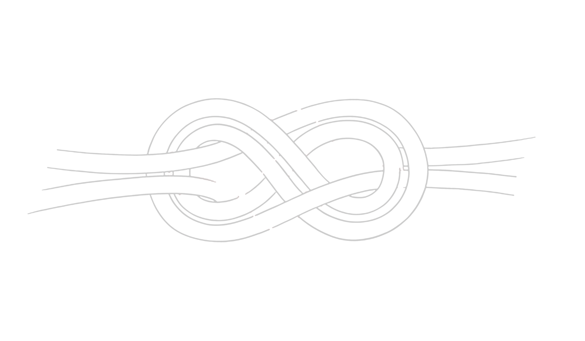
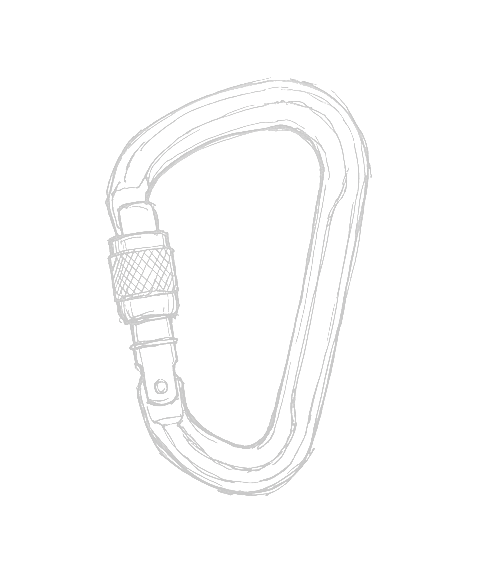
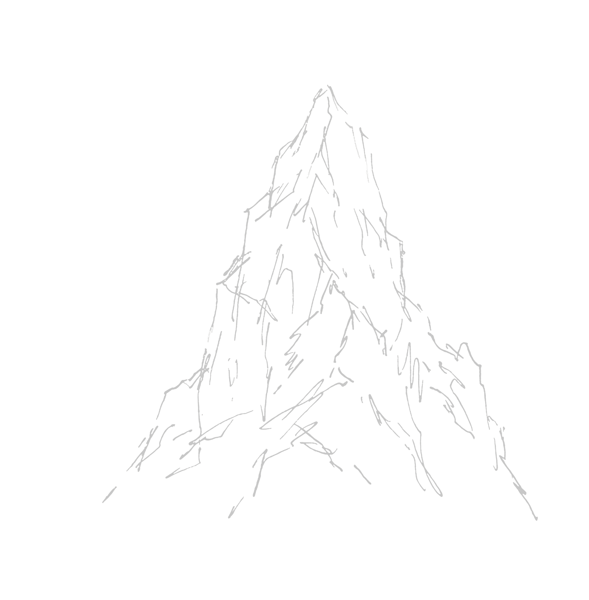
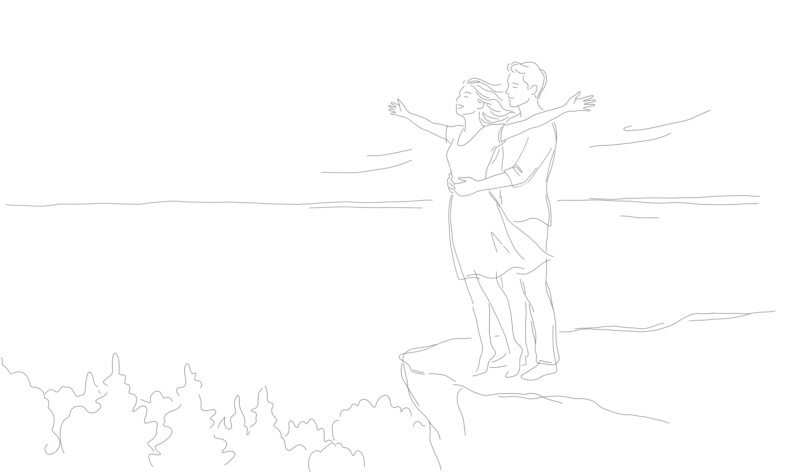
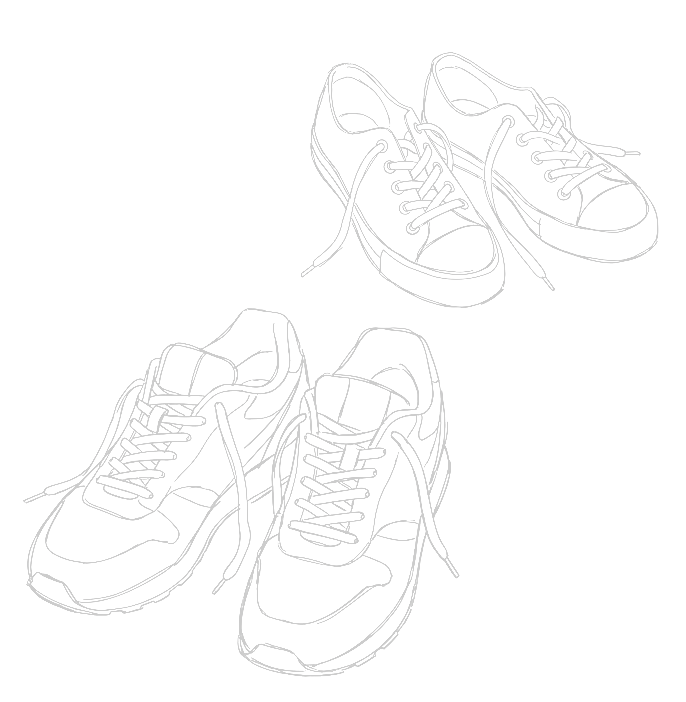
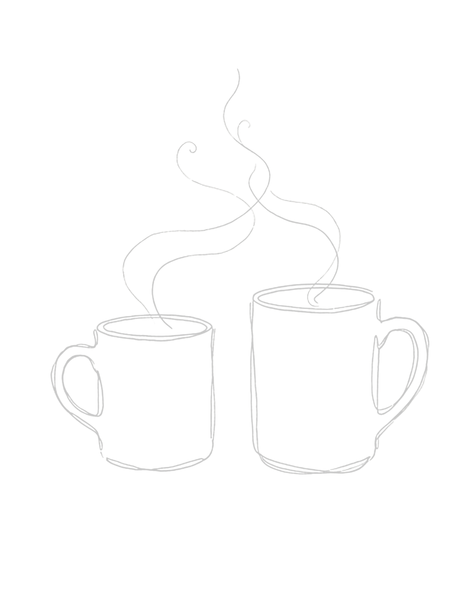
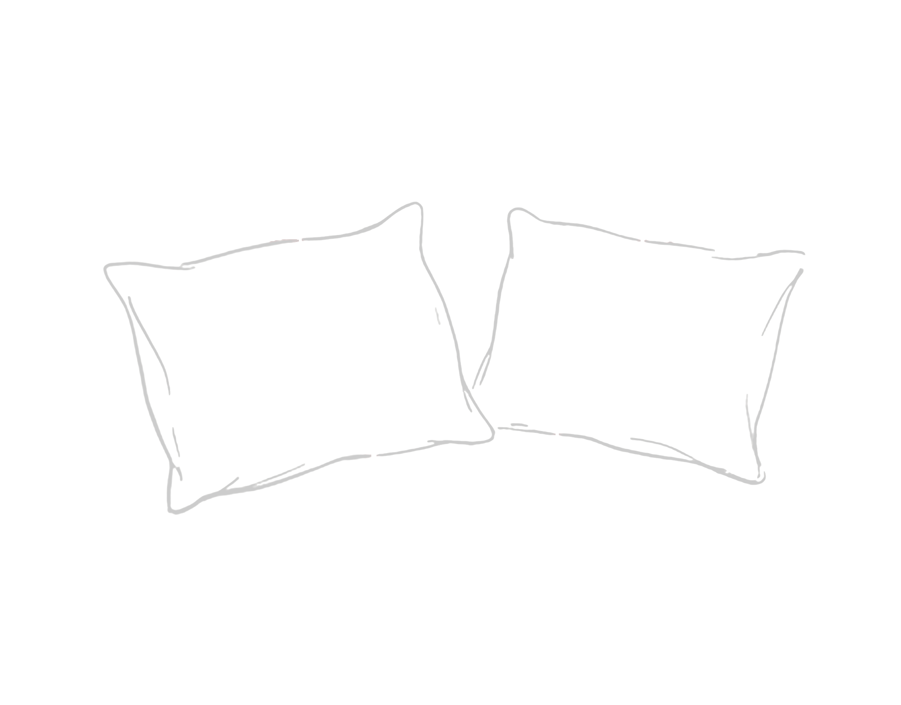
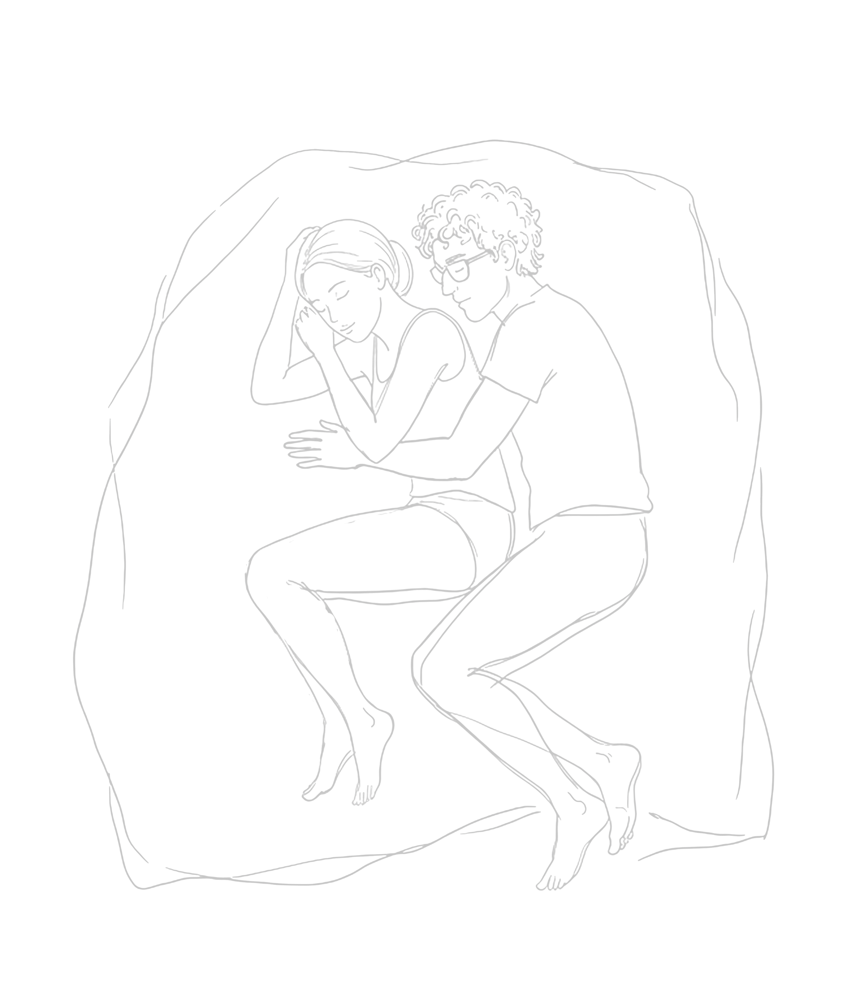

Иногда самое важное начинается почти незаметно.
В японском искусстве есть понятие "Ма" — свободное пространство. Но оно никогда не бывает пустым.

В день нашей первой встречи пространство, между нами, вдруг перестало быть пустым и наполнилось смыслом.

С тех пор эта невидимая нить всегда, между нами.
Иногда близость начинается ещё до того, как люди успевают стать друг другу привычными.

В скалолазании «восьмерка» — главный узел страховки, который символизирует абсолютную надежность и доверие.Мне нравится думать, что в какой-то момент эта нить между нами затянулась чуть крепче — и уже никогда не развязалась.

У нашей истории появилось расстояние. Но оно не разъединяло, а только яснее показывало, как ты мне дорог.

Километры стали не преградой, а дорогой навстречу.

Я помню это чувство: ещё немного — и мы снова будем рядом.

Мы могли смотреть из разных окон, но всё равно были внутри одного ожидания.

Когда мы засыпаем порознь, я чувствую натяжение этой нити. Но я закрываю глаза и вспоминаю твое тепло.Мы можем просыпаться в разных городах, но утро у нас одно на двоих.

Твой голос всегда сокращал расстояние лучше любых поездов.
Есть вещи, которые особенно ясно понимаешь в скалолазании: В скалолазании самое главное — доверять тому, кто тебя страхует.В хорошей страховке есть нечто очень похожее на любовь: внимательность, точность и готовность подхватить.

С тобой мне не страшно брать новую высоту.

Потому что знаю — если я оступлюсь...
...ты меня удержишь.
...ты меня удержишь.

Ты не сдерживаешь меня — ты даёшь мне пространство быть собой и даришь чувство безопасности.

В какой-то момент стало мало просто приезжать друг к другу. Хотелось оставаться.

У каждого большого чувства однажды появляется простая материальная форма.

Примерно год назад рядом у двери встала еще одна пара обуви. Или не одна…

С тех пор любовь для меня — это не только ждать встречи. Это ещё и делать самые обычные вещи сразу на двоих.

Я люблю не только наши большие моменты. Мне нравится то, как мы справляемся с обычной жизнью вдвоём.

Любовь вдруг стала состоять из мелочей. И именно поэтому стала еще сильнее.

Мне очень дорого, что рядом с тобой можно просто помолчать и при этом не чувствовать пустоты.

Раньше я чувствовала расстояние особенно остро ночью. Теперь ночью я просто ищу тебя рукой сквозь сон.

Тогда нить связывала нас через расстояние. Сейчас она стала теплом.

Я люблю твой спокойный взгляд, который умеет останавливать мою тревогу. И то, как ты улыбаешься, когда думаешь, что я не смотрю.

Ты — мой самый ровный ритм и самое сильное сердцебиение.
Ты человек, рядом с которым мне спокойно, интересно, смешно и по-настоящему хорошо. Для меня это и есть любовь.
И я хочу, чтобы так было всегда…
Ты человек, рядом с которым мне спокойно, интересно, смешно и по-настоящему хорошо. Для меня это и есть любовь.
И я хочу, чтобы так было всегда…